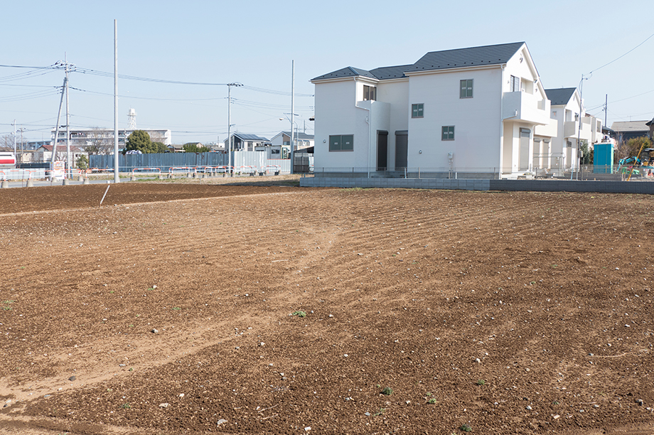

登記完了までの流れと
相続方法や税金の計算方法
- TOP
- 登記完了までの流れと相続方法や税金の計算方法
souzoku 2相続の流れと相続税の計算方法
相続が発生した後にすべきことは沢山あります。遺産の内容を把握した上で遺産分割協議を進める必要があり、2024年4月には相続登記も義務化されます。また、遺産や遺言書の内容次第では相続人同士が揉めてしまうかもしれません。
市川市で不動産売却を手掛ける南口不動産は、相続不動産のプロフェッショナルです。司法書士や会計士とも連携しながら相続手続きをサポートし、難解な相続税の計算業務等も承ります。不動産相続にお悩みなら、まずは当社にお問い合わせください。
法改正により相続登記が義務化される
法改正に伴い、2024年4月1日以降は相続登記が義務化されます。これは所有者不明の土地や建物が増えたことに起因する法改正です。相続登記を無視すると科料を命じられるため、法改正の概要を知っておきましょう。
相続登記の期限は「3年以内」
相続登記の義務化後は、相続が発生したことを知った日から3年以内に相続登記を済ませなければなりません。例えば「被相続人の父が死亡したことを知った」日や、「不動産を相続して所有した」日から3年以内の相続登記が必要です。改正法は2024年4月以前に発生した不動産相続にも適用されるため、すでに相続した不動産に関しても2027年3月31日までには相続登記を済ませましょう。
新設される「相続人申告登記制度」を利用できる
法改正に伴い、相続人が法務局の登記官に申し出ると相続登記の義務を果たしたと認められる「相続人申告登記制度」が新設されます。これは正規の相続登記ではなく、暫定的な相続登記です。例えば遺産分割協議が難航し、相続登記の期限内に不動産を相続する人が決まらない場合に相続人申告登記制度を利用しましょう。そして相続人が確定した後に正式な相続登記を行えば、後述する科料を命じられる心配がなくなります。
相続登記を無視すると10万円の科料を命じられる恐れがある
相続登記は義務化されるため、義務を果たさない場合はペナルティを受けることになります。ペナルティの内容は「最大10万円の科料」です。科料は「罰金」や「過料」とは違って犯罪ではありません。そのため支払ったとしても前科は付きませんが、多額の現金を無駄にしてしまいます。できるだけ早く相続登記を済ませてリスクを回避しましょう。
不動産相続の流れと手続きの内容
不動産相続の基本的な流れを5つのステップに分けて解説します。
- STEP 01遺言書があるか調べる
- まずは遺言書があるかどうかを調べます。遺言書がある場合はその内容に従って遺産分割を行うため、遺言書はとても重要な書類です。自宅や公正証書役場を確認して遺言書の有無を調べましょう。
- STEP 02相続人を決める
- 遺言書がない場合は法定相続人の優先順位に従って相続人を決定するのが基本です。直系卑属が第1順位、直系尊属が第2順位など優先順位が法律で決められており、逆転はできません。
- STEP 03不動産の評価額を調べる
- 相続人が複数いる場合は、分割の割合を決めるための不動産の評価額を調べます。不動産の評価額は「課税明細書」「登記簿謄本」などの書類や、不動産鑑定士の意見を参考にしながら決めることが一般的です。
- STEP 04遺産分割協議で相続分を決める
- 遺言書が無く相続人が複数いる場合は、遺産分割協議で相続分を確定させて「遺産分割協議書」を作成します。不動産の分割方法は「現物分割」「換価分割」「代償分割」「共有名義」の4種類です。
- STEP 053年以内に相続登記を行う
- 相続人が確定した後は、不動産を管轄する法務局の窓口、またはオンラインか郵送で不動産登記を行います。2024年4月1日以降は、相続の発生を知った日から3年以内に相続登記を済ませなければなりません。
不動産は現金より相続税が安いって本当？
相続税対策として不動産を持っていた方が有利といわれますが、これは本当です。不動産には、現金や有価証券には適用されない「相続税評価額の引き下げ」を適用でき、相続発生時点の時価をもとにして相続税を計算するためです。
例えば5,000万円の現金を相続する場合、5,000万円がそのまま課税対象になります。しかし同じ5,000万円で不動産を購入して相続すると、相続発生時の不動産評価額が3,000万円の場合、差額の2,000万円を節税できます。
賃貸物件として活用するのも相続税対策に有効
不動産を利用した節税方法はいくつもありますが、特に有効なのは「賃貸物件」としての活用です。賃貸物件の評価額は30％減額されるため、その他の方法で活用するよりも相続税を大幅に抑えられます。
賃貸物件が建っている土地を保有している場合は、建物と併せて土地の評価額も引き下げられます。ただし全国一律で30％が割引される建物とは違い、土地の割引率は地域によって異なるため、実際にどれくらいの金額が割り引かれるのか確認しておきましょう。
相続税の計算方法の基本
相続税はすべての相続で発生するわけではありません。遺産総額が基礎控除額を上回る場合に、上回った部分にだけ課税されます。基礎控除額は3,000万円で、さらに法定相続人の人数×600万円が加算されます。
仮に法定相続人が「配偶者」「長男」「長女」の3人だった場合、控除額は600万円×3で1,800万円です。これに基礎控除の3,000万円を加えた合計4,800万円が遺産総額から控除されるため、このケースでは遺産総額が4,800万円以下の場合は相続税が発生しません。
課税総額とは？
相続税の計算で頻出する言葉に「課税総額」があります。課税総額とは、現金や不動産の評価額といったプラスの財産から、借金やローンなどマイナスの財産と葬儀費用を差し引いた金額のことです。死亡保険金などの「みなし相続財産」もプラスの財産に含まれますが、法定相続人の人数×500万円は非課税の対象となります。相続税は課税総額を基準に計算し、ここから基礎控除を差し引いた金額が「課税遺産総額」です。
相続人ごとの相続税額の決まり方
複数の相続人がいる場合、相続人ごとの相続税額は、それぞれが遺産を取得した割合により決まります。具体的な計算方法は「相続税の総額×（各相続人の課税価格÷課税価格の合計額）」です。基礎控除以外にも適用できる控除がいくつかあり、例えば被相続人の夫や妻の場合は「配偶者の税額控除の特定」を適用できます。控除を差し引いても相続税が発生する場合は、被相続人の死亡を知った翌日から10ヶ月以内に確定申告が必要です。
土地の評価額の決まり方

土地の評価額は「路線価方式」または「倍率方式」のいずれかを用いて決定します。路線価方式は国税庁が定めた路線価をもとに「路線価×面積×各補正率」で評価額を求める方法です。一方の倍率方式は「固定資産税評価額×倍率」により評価額を決めます。倍率方式は、基本的には路線価が定められていない土地を相続する場合の計算方法です。
土地＋自宅の評価額の決まり方
土地に加えて自宅が建っている土地の場合は「小規模宅地等の特例」を適用できます。これは330平米までの自宅の評価額を80％減額させられる特例です。例えば評価額5,000万円の土地に自宅が建っていると、5,000万円から80%が減額され、評価額を800万円に抑えられます。ただし、特例の適用条件は被相続人と相続人の関係性により異なるため注意しましょう。
南口不動産は司法書士・
会計士のご紹介も可能です
市川市の不動産相続でお困りの方は、まず南口不動産にお問い合わせください。当社は不動産売却を主に手掛ける不動産会社ですが、特に相続不動産の取り扱い実績に長けた「相続のプロフェッショナル」です。
当社には独自のネットワークがあり、司法書士や会計士のご紹介も可能です。難しい相続登記の代行や、正確な相続税額の計算も当社にお任せいただけます。現在のお困りや将来の不安を一掃して不動産相続を完了させたい方は、南口不動産にご相談ください。